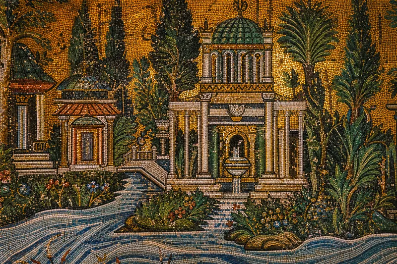

✨
THE GOLDEN MOSAICS
"They built paradise on the wall so you would know what you're praying for. No people. Only trees, rivers, palaces. Heaven has no inhabitants. It is waiting."

Byzantine craftsmen. Islamic commission. The greatest mosaics ever made by hands that prayed differently. Gold tesserae and green glass. Trees that have never existed line rivers that have never flowed past palaces that have never been built. This is paradise — not the one promised, but the one imagined. And the imagination is more honest.
No human figures. Not because they couldn't. Because paradise doesn't need you to pose. It needs you to arrive. The mosaics covered every wall of the courtyard once. Fire, earthquake, neglect took most of them. What remains is still enough to stop your breath. If you stand long enough, the trees move. The water flows. The gold shifts with the light. Al-Walid spent seven years of the Caliphate's entire tax revenue on this mosque. When they asked him why, he said: "Because Damascus deserves it." He was right.